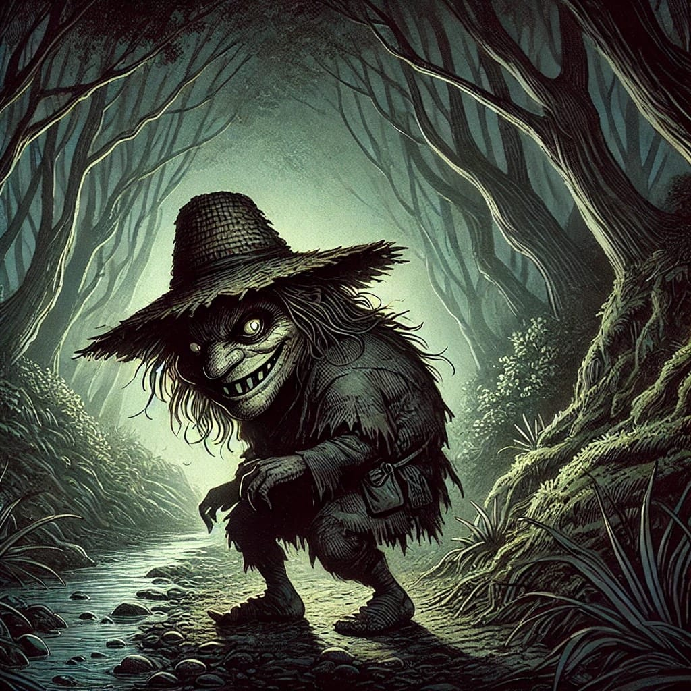

El Trauco es un personaje temido en la mitología de Chiloé. Este ser pequeño y deforme, con rostro grotesco y fuerza descomunal, habita los bosques de la isla. Aunque su apariencia es aterradora, se le atribuye un poder irresistible sobre las mujeres. Según la leyenda, el Trauco seduce a las jóvenes con su mirada o a través de un pequeño bastón mágico. Si una mujer queda embarazada y no puede explicar quién es el padre, suele decirse que fue obra del Trauco. Pese a su fama de seductor, el Trauco también puede castigar a los hombres que invaden su territorio, lanzándoles un aliento que los paraliza o incluso los mata.